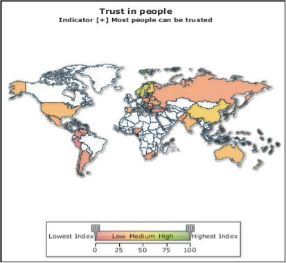

Take the data within the duration from 1995-2014 and of the question “trust in people” as a sample analytic trail.
According to what I want to visualize, get data downloaded from WVS and convert to data file with csv format
Show changes along timeline with line chart. Show comparison between countries at the same time with map coded by color.
Click on the point/countries on the map, map zoom in and show the detail percentage distribution of all choices. Cross by other factors like gender, age, and other questions to show the correlation.
There are always correlations between different variables, show them in a clear way make the correlations easy to find. The following is what I want to achieve, however I only developed part of them.
The raw data are choices of the question and basic demographical statistics. The main data processing is counting and calculating percentage of different answers. Besides, in view of Maps, choices are weighted and summed up as map parameters.
In tab responses, various types of bar chart, pie chart. In tab maps, color code the parameters. In tab time series, line chart.
Cross by demographical statistics and answers to other questions. Filter different choices. Maps: zoom into different continents. Filter indicator to display and filter the range of index. And time series.
Responses: at current time wave, clear comparison between countries for different choices. Crossing by other variables shows correlation between them; Maps: geographically show the weighted map parameter; Time series: display the changes along the timeline.
It can only show one dimension cross the question at a time. Problems in multi-variables display, which can’t show time, countries different choices at the same time.It’s not so necessary to display various types of bar chart, just keep one which is most useful.